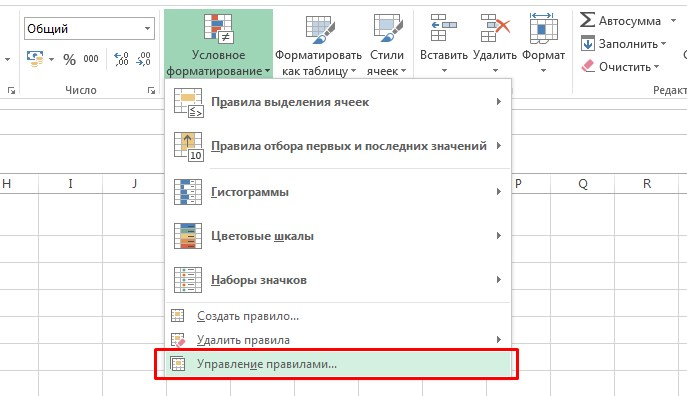
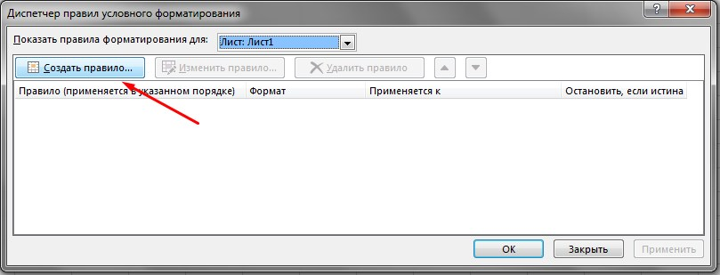
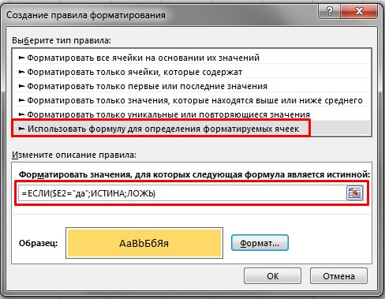
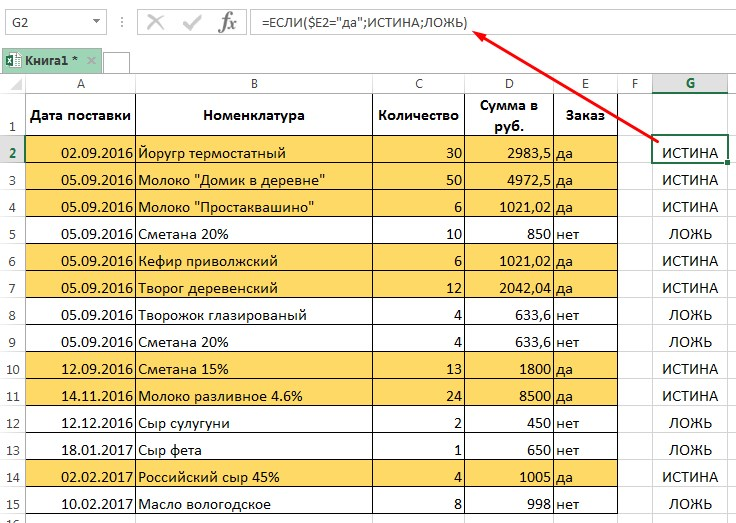
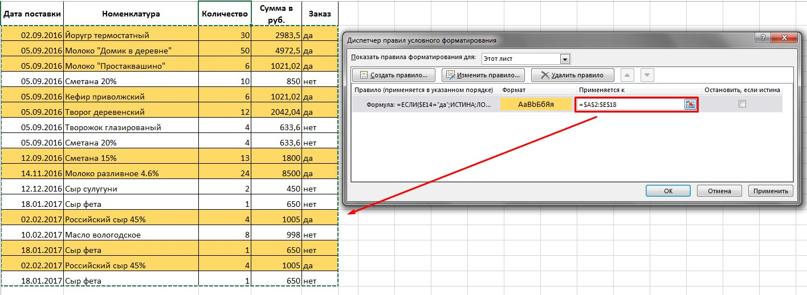

Формулы в условном форматировании
Условие: есть таблица с данными. Необходимо залить цветом строку, если заказ был сделан.
В последнем столбце демонстрационной таблицы отмечено ("да"/"нет") сделан ли заказ. На основе этих данных мне необходимо выделить все строки с заказами. Конечно, можно поставить фильтр, выбрать "да" и вручную выделить цветом строки. Этот способ подходит, если Вам никогда больше не придется редактировать данные в таблице. То есть, в столбце "заказ" условие меняться не будет. А что, если в столбце "заказ" прописана формула, которая проставляет выполнение заказа исходя из его суммы. Вы отредактировали данные, добавили и удалили некоторое количество товара, сумма изменилась, товар уже не попадает в условия заказа. И соответственно, ранее выделенная вручную строка уже не актуальна. На помощь приходит условное форматирование с использованием формул.
Перед форматированием заранее выделим диапозон рабочей таблицы (без шапки). После зайдем в управление правилами. "Главна" -> "Условное форматирование" -> "Управление правилами".
Cоздаем новое правило
В окне "тип правила"" выбираем "Использовать формулу для определения форматируемых ячеек". Вводим формулу в строку ниже. И задаем "формат". В данном случае я выбрала желтую заливку ячейки.
В моем примере нужна конструкция формулы "ЕСЛИ". Ее вид:
=ЕСЛИ(условие;значение, если условие выполняется;значение, если условие не выполняется)
=ЕСЛИ($E2="да";ИСТИНА;ЛОЖЬ)
Знак "$" перед "Е" стоит для того, чтобы зафиксировать столбик. В случае, если мы будем протягивать формулу по горизонтали, столбец Е останется, а не перезапишется на F, G и так по списку. В моем примере условие форматирования находится только в одном столбце, который я и зафиксировала.
Если Вам тяжело писать формулу без подсказок, можете для начала прописать ее в excel (как сделано на скриншоте выше), проверить, что она работает. Скопировать и вставить в строку формул в условном форматировании.
После того, как нажали "ОК", условное форматирование должно сработать, окрасив строки таблицы в выбранный ранее цвет. Если Вам необходимо поменять диапозон таблицы (добавились строки, столбцы), можно воспользоваться одним из вариантов: зайти в "управление правилами" и в разделе "применяется к" выделить любой диапозон таблицы, к которой будет применяться это правило.
Вариантов использования такого вида форматирования множество. Когда-то на работе я вела табличку по сотрудникам с их днями рождениями. И за месяц до дня рождения "сотрудник" становился желтым, а за два дня зеленым :) И с помощью макроса при открытии показывал фильтр только тех сотрудников, у кого в текущем месяце день рождения. Также при расчете акции мне необходимо было видеть наглядно, какие клиенты попадают под условия. Как дополнительный инструмент, может пригодиться в любую минуту.
Посмотреть видео с вариантом использования:
Опубликовано: